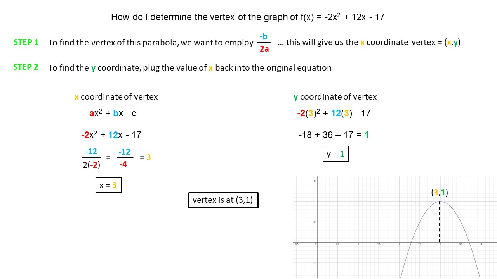

Academic Subjects
➤
Math
➤
Algebra
➤
Quadratic Equations
➤
Vertex Of f(x) = -2x
2
+ 12x - 17
How do I determine the vertex of the graph f(x) = -2x
2
+ 12x - 17
To find the vertex of this parabola, we want to employ
-b
/
2a
this will give us the x-coordinate of the vertex (
x
,
y
)
a
x
2 +
b
x - c
-2
x
2
+
12
x - 17
-
12
/
2(
-2
)
=
-
12
/
-
4
=
3
